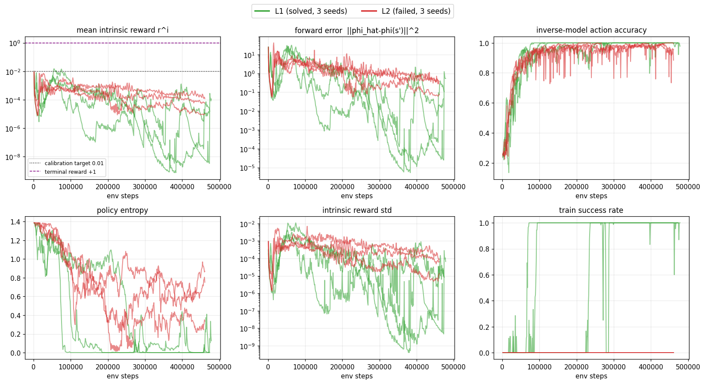
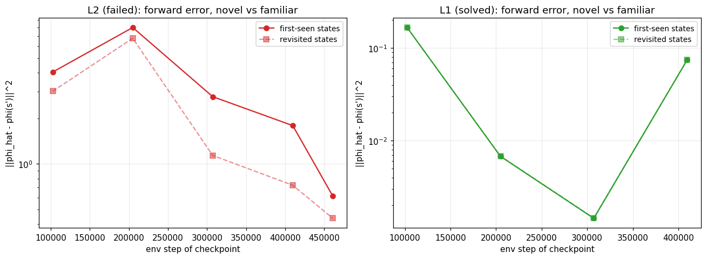
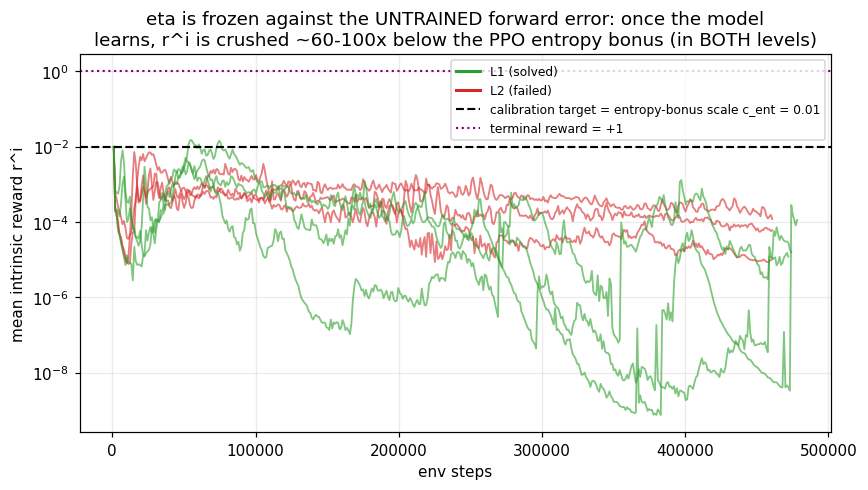
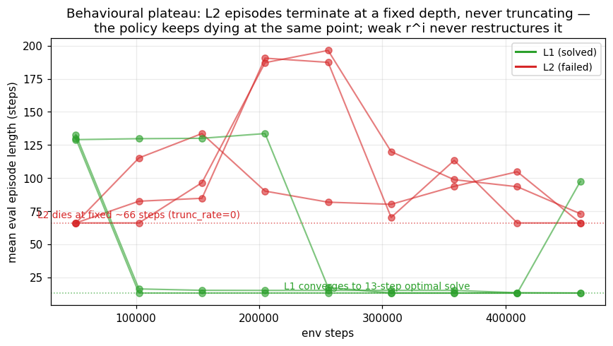

η is frozen against the huge UNTRAINED forward error;
once the model learns (error drops ~60×), r^i is permanently ~60–100× smaller than the PPO
entropy bonus, so a weak-but-still-present novelty signal can never restructure a policy that
keeps dying at a fixed ~66-step depth. The novelty contrast survives — it is just too small to matter.

r^i drops below 1e-3 by
step 2048 (update 2) in every run of both levels; forward error falls from ~7–25 to ~0.05–0.5 in both.
The only behavioural divergence is policy entropy: L1 collapses to ≈0 (it found reward
and committed), while L2 stays high (0.34–0.87 nats) — it never finds reward, so it
keeps wandering. First extrinsic reward: L1 at 17k / 29k / 225k steps (solved 3/3); L2 never (0/3).

r^i max is 8e-4–1.6e-2 — clearly nonzero. This rules out "perfect forward model everywhere
(error→0)" and "nonzero error but zero contrast." On L1 the model genuinely
saturates (error 0.001–0.17, contrast ≈1.0) because the agent revisits the same 12-state solution path —
but L1 had already won, so saturation there is harmless.
| L2 checkpoint (step) | η | r^i mean | r^i mean ÷ c_ent(0.01) | first-seen/revisit contrast | unique states |
|---|---|---|---|---|---|
| 102,400 | 2.98e-4 | 4.5e-4 | 0.045× | 1.34× | 30 |
| 204,800 | 2.98e-4 | 1.0e-3 | 0.101× | 1.18× | 36 |
| 307,200 | 2.98e-4 | 1.8e-4 | 0.017× | 2.45× | 40 |
| 409,600 | 2.98e-4 | 1.1e-4 | 0.011× | 2.48× | 44 |
| 460,800 | 2.98e-4 | 6.5e-5 | 0.007× | 1.40× | 30 |

r^i ≈ 0.01 when the forward error is still ~23 (untrained), giving
η = 2.98e-4 (frozen for the whole run). When the model learns and error falls ~61×
(23.1→0.38), r^i falls the same 61× to ~6e-5 — 0.007–0.10× of the entropy-bonus
scale c_ent=0.01 and ~1e-4 of the +1 terminal reward. So r^i permanently sits
1–2 orders of magnitude below the dashed PPO yardstick: the gradient that should push exploration is
dominated by the entropy regulariser and noise. (On L1, r^i crashes even lower, to 1e-7, because the
solved policy's world is fully predictable — confirming low r^i is a symptom, not the discriminator.)

r^i never reshapes the policy to push
past that death point (L2 needs ~60 correct actions through a deep puzzle). For coverage:
the L2 ICM policy reaches only 30–44 unique states per ~1,600-transition budget vs 15 for
uniform-random — so ICM explores ~2× more than random yet stays far short of L2's depth.
φ is healthy throughout (feat_effective_rank rises 4.9→15.3, no representation collapse), so the failure is in
the reward scale, not the encoder.
r^i = (η/2)‖φ̂(s')−φ(s')‖²; η is auto-set on the
first rollout against the untrained forward error (~23), then frozen
(η=2.98e-4). (2) The forward model learns within a couple of updates, dropping the error ~60×, which
mechanically drops r^i ~60× to ~6e-5 — far below the PPO entropy bonus (0.01) and the +1 goal
reward. (3) A weak per-step novelty bonus that still has contrast (first-seen 1.2–2.5× revisited) but is
two orders of magnitude too small cannot generate enough advantage to drive the policy past the ~66-step
death point of a ~60-action puzzle, so coverage plateaus at ≤44 states and the agent never sees its first reward.
This refines the project's prior note: the culprit is η-renormalisation crushing the magnitude, not a
literally perfect model and not a literal loss of contrast.
analysis/curiosity_failure/): 01_curve_forensics.py (metrics curves),
02_contrast_and_coverage.py (checkpoint rollouts: first-seen/revisited error + coverage vs random,
writes results_02.json), 03_yardstick.py (r^i vs PPO yardsticks),
04_mechanism_fig.py (η-squeeze + death-depth figures).
Checkpoint probes use seed0 of each level, fresh on-policy rollouts of 8 envs × 200 steps, UI rows 61–62 masked for
exact-frame state identity. Caveats: contrast/coverage probes are single-seed (seed0) snapshots — the metrics-based
claims (§1, §3, §4 plateau) hold across all 3 seeds; first-seen counts per rollout are small (1.9–2.8% of transitions),
so the contrast ratios are directionally robust but not high-precision.